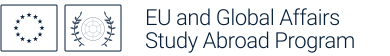
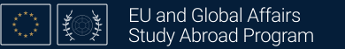

Program branding
Compare the approved wordmark with a colleague's alternate design. The alternate is a tuning sandbox only; it is not used by the promotional materials.
Alternate concept · sandbox
Horizon logo · colleague's Logo 3e
Reconstructed from the supplied 220 × 220 mark specification and transparent GT image. Adjustments below affect this preview only.
Baseline source: Logo 3e specification. The supplied navy GT artwork is a transparent PNG mockup asset; the ZIP did not contain a complete rendered Logo 3e file.
Approved wordmark downloads
Standard · transparent
Use on a light or white background; transparency keeps the background flexible.


Standard · white background
Ready to place in a document with an opaque white background.



On Georgia Tech navy
White wordmark with restrained gold EU stars on a navy background.



Reversed · transparent
White wordmark with gold EU stars; use on a dark background of your choice.



All-white · transparent
Single-color white for dark backgrounds and one-color production.



The SVGs scale without loss of quality. PNGs are 1560 × 224 pixels. The approved source is program-wordmark.svg; the other files are generated exports.